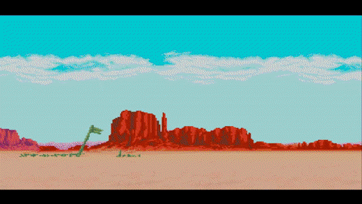

A vida anda muito tranquila nas semanas que passam para Steve. Tudo tem se baseado em gastar os
dólares recebidos de sua última caçada.
De sallon em saloon, de cidade em cidade, Steve passeia,
aproveitando a paz que tem recém chegado por estas bandas.
Há algumas semanas ele não vê seus comparsas da Sunset Riders que partiram para investigar pistas
que podem leva-los até Sir Richard Rose, o magnata e rei do crime.
Depois de tomar algumas, o que você decide fazer?
